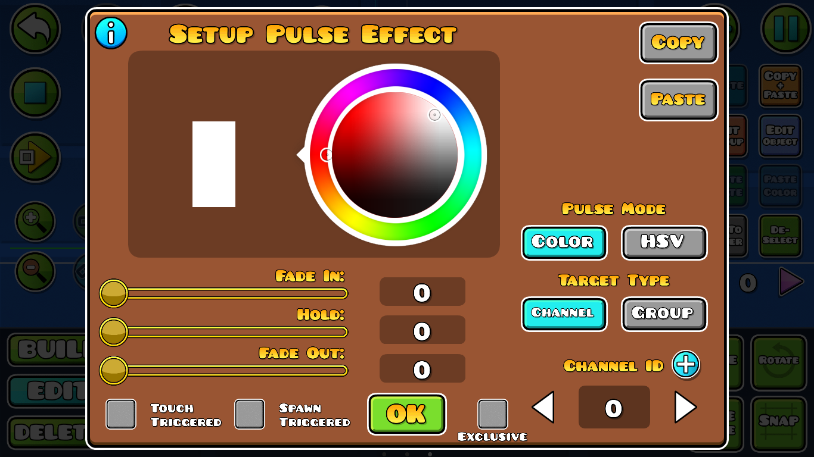

Pulse: Este trigger sirve para dar un efecto de "pulso" de color a cualquier ID de color o tipo de color como lo puede ser BG, P1, Obj, etc.

Fade In: el tiempo que tardará la transición en cambiar el color.
Hold: el tiempo que permanecerá estático el nuevo color antes de empezar a regresar al original.
Fade Out: el tiempo que tardará la transición en regresar al color original.
Como se puede observar en el ejemplo, se usaron diferentes ID's de color, en el que cada trigger Pulse controlaba el color individualmente de cada pincho, evidentemente con una configuración de tiempos diferentes en cada uno.
Como ya se había mencionado, este trigger al igual que el "Color" no solo puede cambiar el color de una ID de color normal, sino tambien los tipos de color por default, como en el caso siguiente donde crea un efecto punsante de color rosado en el color del fondo "BG".
Tutorial recomendado: